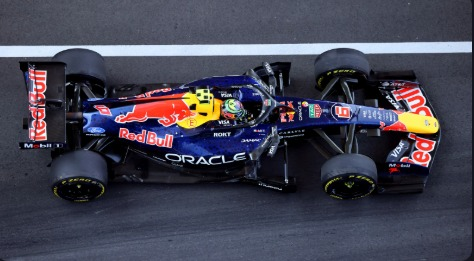
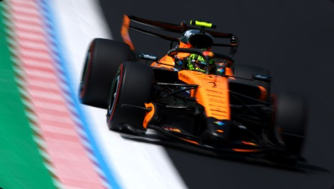
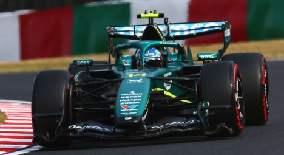

Ferrari
A Scuderia Ferrari foi fundada por Enzo Ferrari em 1929 e é a única equipe presente em todas as temporadas desde 1950.
Cor: vermelho
A Fórmula 1 é a categoria máxima do automobilismo mundial, onde tecnologia, estratégia e coragem andam juntas.
Conheça abaixo algumas das equipes mais importantes da história.
Conheça os pilotos →
A Scuderia Ferrari foi fundada por Enzo Ferrari em 1929 e é a única equipe presente em todas as temporadas desde 1950.
Cor: vermelho

Dominou a era dos motores híbridos, com oito títulos seguidos de construtores entre 2014 e 2021.
Cor: prata e turquesa

Equipe de Max Verstappen, tetracampeão de pilotos de 2021 a 2024.
Cor: azul escuro

Fundada por Bruce McLaren em 1963, foi a equipe de Ayrton Senna entre 1988 e 1993.
Cor: laranja

Montadora alemã que anunciou sua entrada na F1 em 2022 e estreou em 2026, assumindo a estrutura da equipe Sauber.
Cor: prata, preto e vermelho

Voltou à F1 em 2021 com este nome e tem sua sede em Silverstone, na Inglaterra.
Cor: verde